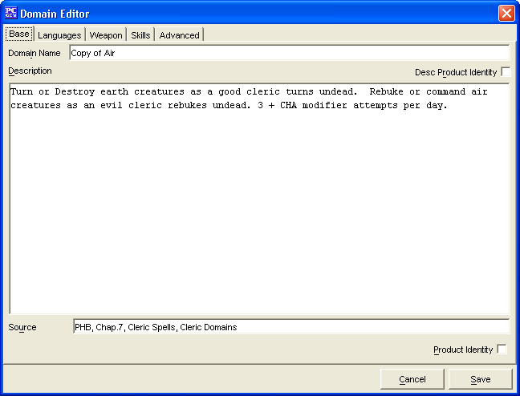

The Base Tab has everything required to make a simple domain. The remaining tabs are for more advanced domain creation. The domains created will be saved into the data/custom directory under the name of customDomains.lst.
The Domain Name is where you will enter the name for your domain.
The Description window is where you will type in a description of the domain powers (i.e. "Turn or Destroy earth creatures as a good cleric turns undead")
The Source window, is a text window for listing what source material the domain is from. If it is a custom created domain, then you can leave this blank or simply put in "custom"
The Product Identity checkbox is to denote if the domain's name being created is the Product Identity of a publisher
The Cancel and Save buttons, which appear on every tab, are used to either cancel the domain creation or save it to the customDomains.lst file.